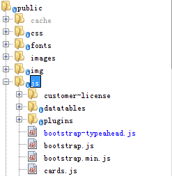

JavaScript的出现就是为了解决，不需要将所有的表单数据全部提交到服务器.
加载Js代码的三种方式：
第一种：<script></script>标签里面（类似于css的类的形式）
第二种: 嵌套在html的标签中（类似于style的形式）
第三种：直接调用类<script src=”js文件路径”></script>(项目中这样使用的 分离不同类型的代码)

1.document.write() ---会将数据显示到网页的body里面
2.document.title-------输出到title里面
3.JavaScript中函数的参数可以通过arguments数组进行管理，也就是说，可以不用写形 式参数，Arguments是一个默认的数组，第一个实际参数会自动保存到arguments数组 的第一个元素，第二个参数会自动保存到数组的第二个元素，依次类推。类似于：
Function f1(){
Alert(arguments[0]);
Alert(arguments[1]);
}
F1(“张三”，”李四”);
4.在函数内部，加var的话，就是默认表示的是局部变量，没有var的话就是全局变量
1.闭包就是父级元素利用子集元素的结果。
2.null的类型为对象；
如果你现在正在纠结是否继续学前端，如果你害怕半途而废不知道从何开始，如果你觉得这篇文章对你还是有很大帮助的话，不介意的话可以加下我刚刚建立的一个学习交流群，有很多相关资料和学习视频：907694362
<script type=”text/javascript”>
function hero(){
This.name=’李逵’;
This.skill=function(){
Alert(‘大斧子’);
}
}
var obj =new hero();
alert(obj);
for(var attr in obj){
Console.log(obj[attr]);
}
</script>String()：强制转换成字符串
Number()：强制转换成数值
parseInt()：强制转换成整数
parseFloat()：强制转换成小数
Bollean()：强制转换成布尔类型
逻辑运算符：&& || !
concat():concat()链接多个数组生成新的数组
Var arr3=arr1.concat(arr2);
join():将数组元素通过某个分隔符连接起来
Var str=arr1.join(‘,’);
针对于最后一个元素
push：向数组插入一个元素，保存在最后一个位置
pop： 把最后这元素弹出
针对于第一个元素
shift：删除第一个元素
unshift：向数组的开始位置插入一个元素
Arr1.shift(); //删除最后一个元素
Arr1.unshift(‘女足’); //向数组的开始加入一个元素
reverse() 颠倒数组的顺序
Slice:从开始的位置截取到结束的位置,将截取的结果返回;输出的是截取的，
Splice():从开始的位置进行截取，将剩下的结果进行输出
Slice与splice都是切割的，不过
Slice是输出进行截取的，
Splice是输出截取的扔掉，要的是剩下的结果。
Sort():默认按照字符的顺序进行排序，可以用自定义函数进行定义升序降序
<script yupe=”text/javascript”>
Var arr1=[120,113,56,34,21,10];
Arr1.sort(mysort);
Console.log(arr1);
//以下进行定义降序
Function mysort(a,b){
Return b-a;
}
</script>
toString()
将数组转换成字符串
<script type=”text/javascript”>
Var arr1=[‘曼联队’,’皇马队’,’巴西队’,’英超队’];
Var str=arr1.tostring();
Console.log(str);
</script>indexOf 是返回的下标
lastindexOf() 是说返回上次的下标
Split() 元素1:分隔号 元素2:返回几个元素
Replace(x,y) 进行替换，将x替换为y
charsAt() 索引为n的元素是多少
Slice() 输出的是包含的
Splice() 是包含的进行删除。
Substr() 元素1:开始元素的下标 元素2:长度
Substring() 元素1:开始元素的下标 元素2:结束元素的下标
toLowerCase() 变成小写
toUpperCase() 变成大写
toString() 变成字符串
Math.abs()对于数值进行求取绝对值
<script type=”text/javascript”>
Var num=-90;
Var res =math.abs(num);
Console.log(res);
</script>
Math.ceil()对于数值进行进一取整
Math.floor()对于数值进行降一取整
Math.round()四舍五入进行取整
Math.max()进行求取最大值
Math.min()进行求取最小值
Math.pow(x,y)幂运算
Math.random()随机数0~1的数字
Math.sqrt(x)平方根运算
<script type=”text/javascript”>
Var res =math.pow(2,3); //输出2的3次方
Console.log(res);
</script>Match()